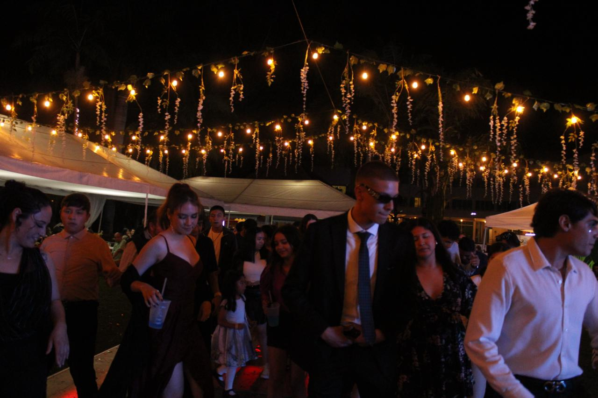

Autobiografia
Hola, les contaré unpoco a cerca de lo que ha sido mi vida hasta hoy, nací el 21 de junio del 2006, en el hospital
"El niño y la mujer en Santiago de Queretaro, Qro, nací entre las 8 y 9p.m., le tuvieron que hacer cesarea a mi mamá porque los doctores dijeron Queretaro
"No queria nacer", gran forma de llamar a la ausencia de contracciones en dias de supuesto parto, cuando nací mi hermana mayor estaba
cumpliendo 9 años, cumplimos años el mismo día sin duda mi papá es bueno para coordinar fechas, de vez en cuando sacamos ese tema
para molestar a mi mamá.
En mis primeros meses de nacida no lloraba, mi mamá siempre dice que fuí una bebé muy tranquila, me salieron mis primeros dientes
a los cinco meses, fueron los dos de arriba, y mi mamá opto po la mamila porque ya la mordía.
Estuve mis primeros dos años viviendo en Queretaro, a pocos meses de cumplir 3 nos mudamos a Veracruz, mi papá tiene un rancho ahí,
poquito tiempo despues entre al preescolar, recuerdo que lloraba mucho porque no queria estar sin mi mamá, y para que dejara de lorar me
decían que me iban a comprar un huevito kinder, nunca me lo copraban.
Educacion:
KINDER/PREESCOLAR
No recuerdo la mayor parte de mi primer año en el preescolar, solo recuerdo vagos momentos con unos amigos que tenia,
Cristian, Tamara, Salma y Carlos, recuerdo que mi primo estuvo conmigo pero por alguna razon casi nunca me lo encontraba en los recesos,
mi maestra se llamaba Caren, era la mamá de Cristian, solo recuerdo jugar aprender colores, letras, numeros, que la maestra nos
ponia muchas cosas en ingles.

En mi segundo año de preescolar tenia los mismos amigos, ahora si haciamos mas cosas, mi maestra se llamaba Maria Luisa, era muy agradable,
no me caía bien la maestra de Ingles, asi que un dia le mordi una nalga, mi altura no daba para mucho, igual no me regañaron asi que
usualmente con esa maestra no hacia nada.
Educación fisica
Odiaba esa clase, realmente nunca asisiti a ninguna clase de educacion fisica, siempre optaba por encerrarme en el salon y no salir hasta
que la clase acabara, en esos tiempos tampoco me dijeron nada, incluso mi maestra de entonces me apoyaba para que no me dijeran algo, me
acuerdo que el profe se llamaba Hugo y tenia una hija en mi salón llamada Melany, esa niña me caia mal, siempre me jalaba el cabello y
el dia que yo le di una cachetada me regañaron :c
De ahi no recuerdo mucho, en tercero de kinder no recuerdo hacer algo importante, solo recuerdo que les cobraba a mis compañeros
por hacer sus actividades e la clase, sin duda mi mayor negocio JAJA. En mi graduación del kinder lleve un vestido blanco que me hizo ver color
canelita pasión, antes yo estaba muy bronceada, al lado de mi hermano me veia negra, me gustaba mucho uemarme en el sol, e igual jugaba demasiado bajo el
sol, pero bueno retomando la graduación, recuerdo que ese dia mi tia Neyra fue mi madrina y desde ese entonces no me ha regalado nada, ni un chicle,
no me quejo pero si me quejo, hay una foto linda de ese dia:
PRIMARIA
Mi primer año de primaria fue en la Juan de la Luz Enriquez, eramos mas de 30 en el salón y yo estaba en primero C, no recuerdo a casi nadie de ahi, a excepcion
de Ulises, Monse, Cristobal, Leilani, Majo, Esteban, Felipe, Kira y Marcos, ellos fueron mis amigos durante todo ese año, leilani se sentaba a mi lado y siempre
llevaba gomitas lit siempre,la maestra se llamaba Rocio , la tengo muy presente porque siempre me regalaba un helado en la hora del receso, literal no hubo dia
que no me comprara un helado, se sentia como tener una segunda mamá en la escuela, mi primo igual estaba ahi, solo que el iba en primero A y no recuerdo
haberlo visto alguna vez en la escuela JAJA.
Tercero y cuarto de primaria los pase en el Colegio Vercruz, solo que no recuerdo nada de esas fechas,
sin duda pasaron cosas en mi vida que ahorita simplemente no recuerdo, creo fueron en esos años cuando
mataron a mi hermana, si bien fue un impacto fuerte, yo no lograba entender y aceptar del todo el hecho
de que ya nunca más la vería, ahora me da tristeza saber que ni si quiera recuerdo su voz, no tengo
ni el menor recuerdo con ella, como si mi mente decidera borrar todo lo relacionado con ella.
Cuando estaba en sexto fui a un zoologico, mi primo fue conmigo, se llama Bioparque Estrella, la verdad fue
una experciencia realmente inolvidable, cada hora ahi la disfrute demasiado, hubo muchos recorridos y un lago
donde habia dinosaurios fakes, igual un pasadiso de terror, recuerdo que mi primo no se queria subir conmigo
pero aun asi lo obligué, nos tomamos fotos con casi todos los animales que habia, pero mis favs fueron con las
jirafas:
Esos dos de ahí somos mi primo y yo, con el pasar de los años no hetenido ningun cambio fisico JAJA, esa jirafa es top
fue la única que se nos acercaba y se quedo con nosotros un buen rato.
SECUNDARIA
En la secundaria era muy "popular", la mayoría queria estar conmigo, era muy común que estuviera rodeada de
personas en el receso, en aquel tiempo me gustaba la atención que me daban, casi todo lo que comía o se me
antojaba era gratis, porque habia chicos que pagaban por mi, casi nunca tuve que gastar dinero, igual
el primer año fui la rebelde, nunca lleve el cabello recogido, tampoco llevaba bien el uniforme, me pintaba
las uñas, me pinte el cabello de morado, siempre he ido contra las reglas, eso de ser chingaquedito se me da,
tenia a mi mejor amigo llamado Sebas, literalmente fuimos inseparables, hasta la fecha hablamos:
De ahí pues entre a segundo pero hubo pandemia, no recuerdo nada de ese tiempo, se que por esas fechas
me quitaron el celular pq me puse super borracha, asi que saltemonos a cuando cumplí 15, no hice nada ese dia
aunque esperaba algo, aun asi no tuve nada, muchas personas que vi ese dia ni siquiera sabian que cumplia años
a personas me refiero a familia, me la pase bien dentro de lo que cabe,ese dia vi a mi abuelo despues de no
haberlo visto en 4 años:
PREPARATORIA
Cuando inicie en la prepa fue en linea, aun asi al mes de entrar nos pusimos de acuerdo para salir
eramos un grupo grande, eramos los mas amigos de toda la vida, estuvo chistoso porque ese dia
pasaron muchas cosas, demasiadad JAJA, quedamos de vernos en un Starbucks con un parque cerca para
asi poder tener algo que hacer despues del cafecito:

En segundo semestre fui a manzanillo, me la pase super bien, fui con una tia de estados unidos,
y mi prima, fueron 9 horas de camino en camioneta, un infierno total, las vistas eran preciosas
el clima estaba super agradable, e incluso pasamos gratis a un hotel porque al dueño le gusto mi tia,
la verdad esas son ventajas de bonita, ese dia maneje una moto acuatica, me encanto manejarla:
De ahi hice mcuhas cosas, pero las ultimas más relevantes en mi vida fue que conoci a unas personas muy
agradables en unos quince, en los que nunca solte un vaso que me dieron, baile y disfrute como nunca
antes habia disfrutado una fista, la verdad quisiera que se repita ese dia, solo conocia a tres personas y
termine hablando con medio mundo, incluso una chica que recien conoci ese dia se quedo a dormir conmigo en mi casa,
baile el payaso del rodeo y hasta pruebas hubo, yo me anduve escondiendo de las camaras JAJA

Esa fiesta fue un sabado, y yo regrese al otro dia para quedarme con mi amiga, estuve con ella tres dias
en esos tres dias salimos con los tipos que conoci ese dia, estan loquisimos, y gastan dinero a lo bestia,
pero realmente me diverti con ellos, saben disfrutar cada pequeño momento de la vida, hasta los malos,
admire que hacen lo que les hace feliz sin importar el que diran, fuimos a la playa, ese dia uno de ellos
se avento rodando por las dunas JAJA
Y de ahi ya no ha pasado nada, aqui concluyo esto:D